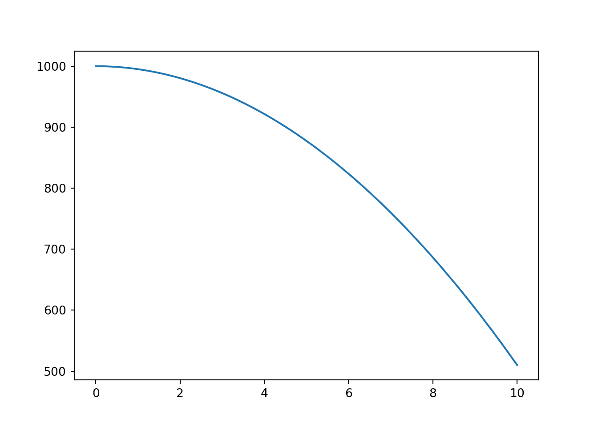
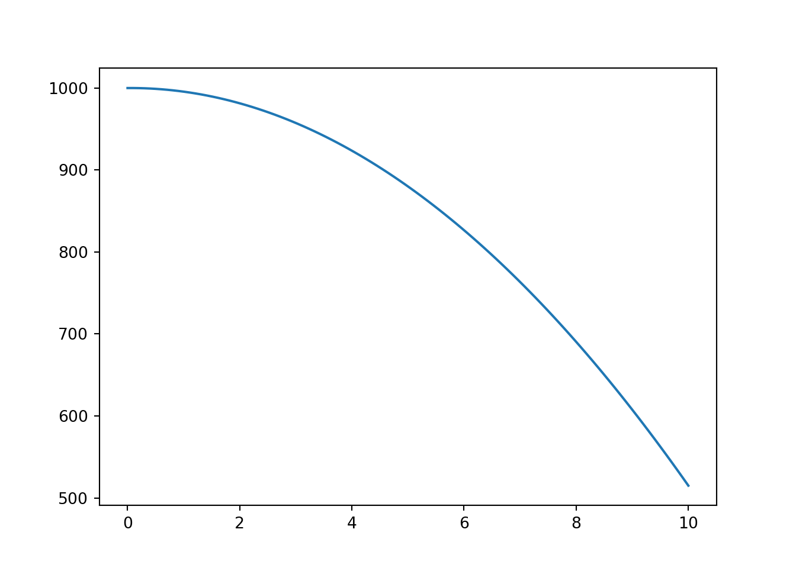
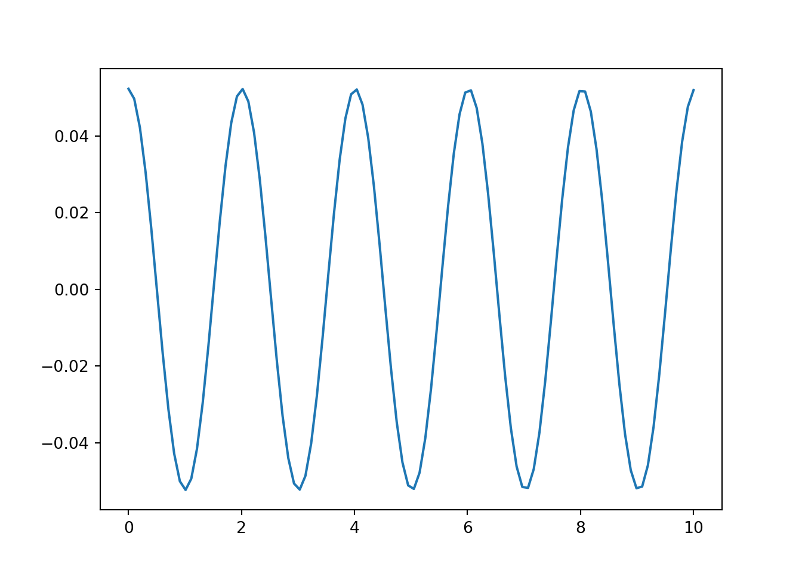
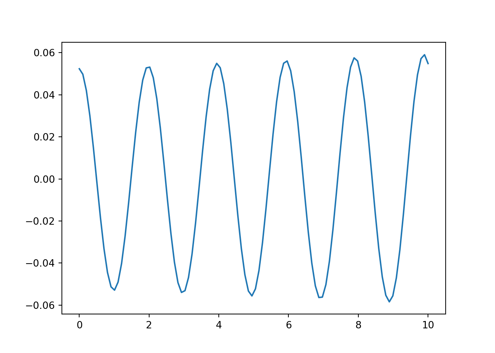
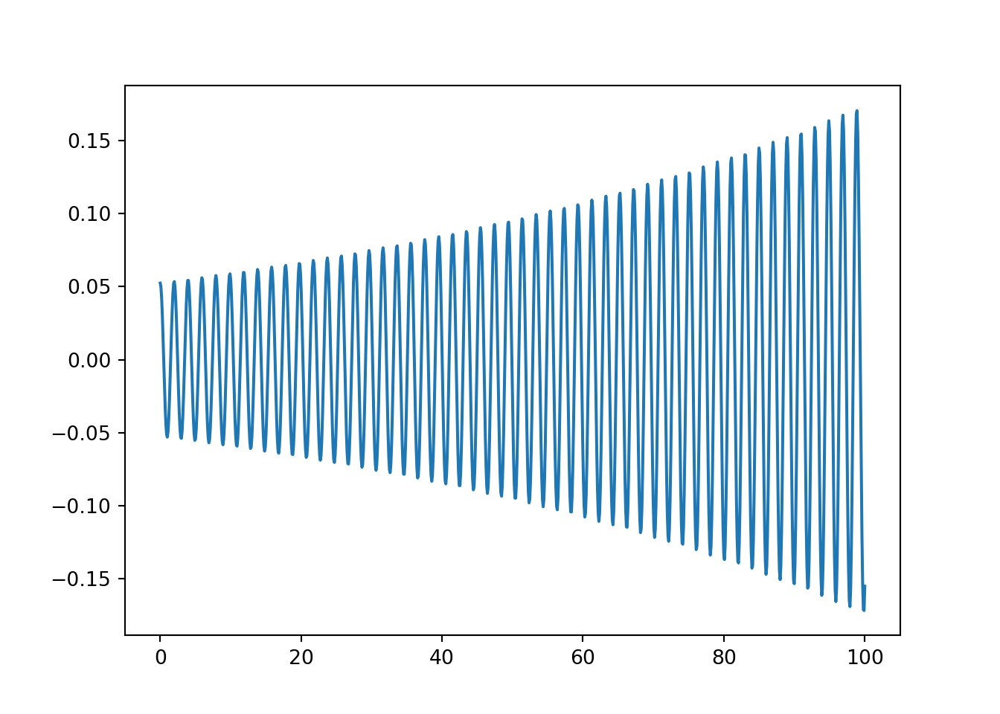
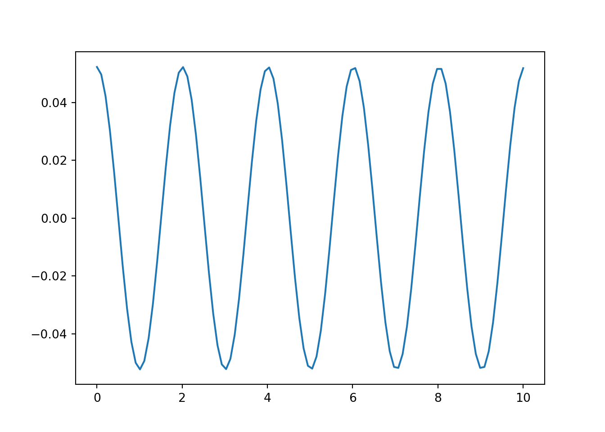
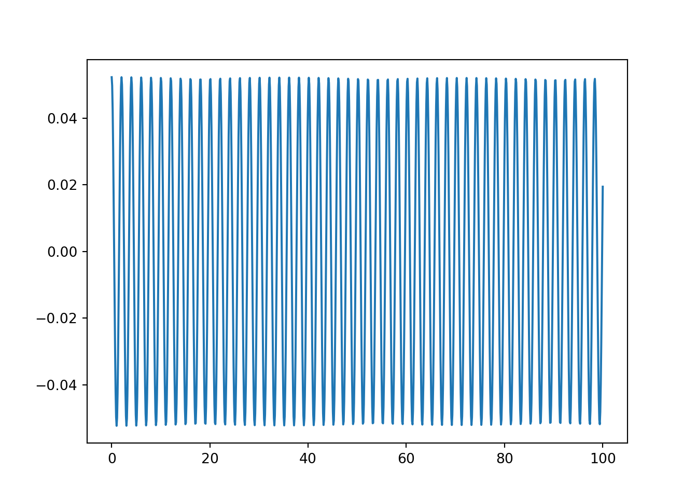
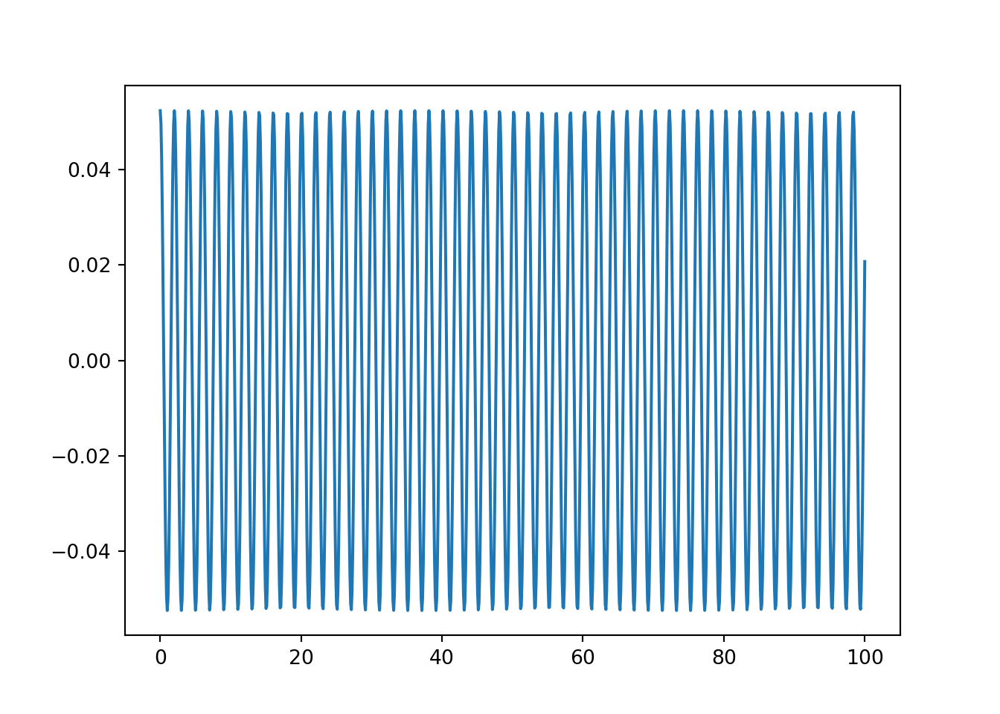

Глава 2 Численное решение ОДУ
Численное интегрирование - техника приблизительного (аппроксимированного) решения обыкновенных дифференциальных уравнений (ОДУ, англ. ODE).использу Инженеры решают ОДУ при моделировании физических явлений и законов
2.1 Что такое ОДУ.
ОДУ - это уравнения вида
\[ F(x,y,y^\prime,...,y^{(n-1)}) = y^{(n)} \tag{2.1} \]
такая форма записи еще называется явным обыкновенным дифференциальным уравнением порядка \(n\): старшая производная выражена через производные меньших порядков.
Например, ОДУ падения тела без сопротивления воздуха будет:
\[ \frac{d^2x}{dt^2} = g \]
где:
- x - перемещение тела
- g - ускорение свободного падения
2.2 Свободное падение тела без сопротивления.
Уравнение свободного падения в аналитической форме выглядит как:
\[ h = h_0 - \frac{gt^2}{2} \]
где,
- \(h_0\) - изначальная высота
- \(h\) - высота тела в момент времени \(t\)
Построим график высоты в каждый момент времени:
import numpy as np
import pandas as pd
import matplotlib.pyplot as plt
_START_H = 1000
_GRAVITY = 9.8 # m/s^2
# возвращает высоту тела в момент времени t
def analytic_solution_h(t):
return _START_H - _GRAVITY * t**2 / 2
def analytic_solution_v(t):
return _GRAVITY * t
# шаг времени 0.1 секунды
x = np.linspace(start=0, stop=10, num=100)
y_analytic = np.vectorize(analytic_solution_h)(x)
plt.plot(x, y_analytic)
plt.show()
Дифференциальная форма выглядит как:
\[ \frac{dv}{dt} = g \tag{2.2} \]
где:
- \(v\) - скорость
- \(t\) - время
- \(g\) - ускорение свободного падения
которое можно интуитивно прочитать следующим образом:
- \(d\) - это дельта, изменение
- изменение скорости (\(dv\)) за какой-то промежуток времени (\(dt\)) это ускорение свободного падения или изменение скорости равно произведению ускорения свободного падения \(g\) на \(dt\).
При этом скорость по определению это отношение расстояния ко времени:
\[ \frac{dx}{dt} = v \]
Совмещая эти два уравнения получаем систему дифференциальных уравнений:
\[ \begin{cases} \frac{dv}{dt} = g \\ \frac{dx}{dt} = v \end{cases} \]
Попробуем решить эту систему используя интуицию. Если \(\Delta t\) это малое приращение (через \(\Delta\) я буду обозначать конечное приращение - такое, которое мы можем выразить в числах; я это делаю для консистентности, чтобы отличать от бесконечно малого \(d\) в производной), то мы можем вычислить изменения скорости \(\Delta v\) умножением \(g\cdot \Delta t\). Таким образом:
\[ \begin{cases} \Delta v = g \Delta t \\ \Delta x = v \Delta t \end{cases} \]
В формуле выше есть только изменения, для вычисления потребуются промежуточные переменные для хранения абсолютных значений скорости и высоты.
\[ \begin{cases} \Delta v = g \Delta t \\ \Delta x = v \Delta t \\ v_{n+1} = v_{n} + \Delta v \\ x_{n+1} = x_{n} + \Delta x \end{cases} \]
Заметим, что достаточно запоминать только абсолютные значения, а изменения значений нужны только для вычисления новых абсолютных значений. Например, чтобы вычислить следующее значение скорости \(v_{n+1}\), с предыдущего шага нужно знать только \(v_n\), а \(\Delta v\) требуется только для промежуточных вычислений. Напишем код для одного шага вычислений:
from dataclasses import dataclass
import copy
@dataclass
class State:
height: float
velocity: float
def derived_solution(state: State, dt: float) -> State:
new_state = copy.deepcopy(state)
dV = - _GRAVITY * dt
new_state.velocity += dV
dH = state.velocity * dt
new_state.height += dH
return new_stateВычислим значения высоты на каждом промежутке времени:
prev_t = x[0]
state = State(height=_START_H, velocity=0)
y_derived_list = list()
for t in x:
dt = t - prev_t
state = derived_solution(state, dt)
prev_t = t
y_derived_list.append(state.height)
plt.plot(x, y_derived_list)
plt.show()
Выглядит похожим на график решения в аналитической форме. Проверим финальные значения:
print("y_analytic", y_analytic[-1])## y_analytic 509.99999999999994print("y_derived_list", y_derived_list[-1])## y_derived_list 514.949494949495В последнем решении где-то потерялось 5 метров.
Проанализируем решение:
dV = - _GRAVITY * dt # <-- изменение скорости
new_state.velocity += dV # <-- новая скорость
dH = state.velocity * dt # <-- вычисляем изменение высоты используя скорость с предыдущего шага
new_state.height += dH # <-- новая высотаИзменение высоты считается используя значение скорости с предыдущего шага. Можно использовать новое значение скорости, но это тоже не поможет, потому что скорость меняется на всем промежутке dt. Первое решение: уменьшим шаг dt и ошибка станет меньше за счет уменьшения ошибки от изменения скорости. Проверим:
prev_t = x[0]
state = State(height=_START_H, velocity=0)
y_derived_list_fine = list()
# шаг времени 0.01 секунды
fine_x = np.linspace(start=0, stop=10, num=1000)
for t in fine_x:
dt = t - prev_t
state = derived_solution(state, dt)
prev_t = t
y_derived_list_fine.append(state.height)
print("y_derived_list_fine", y_derived_list_fine[-1])## y_derived_list_fine 510.4904904904926Стало лучше, с уменьшением шага в 10 раз (увеличением со 100 шагов до 1000) ошибка уменьшилась до менее 1 метра. При этом требуется сделать в 10 раз больше вычислений. Попробуем учесть изменение скорости внутри dt. Для этого возьмем среднее арифметическое между скоростью с предыдущего и текущего шагов.
def derived_solution_v2(state, dt):
new_state = copy.deepcopy(state)
dV = - _GRAVITY * dt
new_state.velocity += dV
# считаем изменение высоты от среднеарифметического между новым и старым
# значениями скорости
dH = (0.5 * state.velocity + 0.5 * new_state.velocity) * dt
new_state.height += dH
return new_state
prev_t = x[0]
state = State(height=_START_H, velocity=0)
y_derived_list_v2 = list()
for t in x:
dt = t - prev_t
state = derived_solution_v2(state, dt)
prev_t = t
y_derived_list_v2.append(state.height)
plt.plot(x, y_derived_list_v2)
plt.show()print("y_analytic", y_analytic[-1])## y_analytic 509.99999999999994print("y_derived_list", y_derived_list[-1])## y_derived_list 514.949494949495print("y_derived_list_v2", y_derived_list_v2[-1])## y_derived_list_v2 509.99999999999994Получилось точно такое же значение как и для аналитического решения.
Разберемся почему так получается. Вообще говоря, графически интегрирование - это поиск площади под кривой. Представим себе движение тела с постоянной скоростью. Скорость - это производная от пройденного расстояния. Или наоборот: расстояние это интеграл от скорости. Если автомобиль едет со скоростью 80 км/ч, то за 2 часа проедет 160 км. Таким образом пройденное расстояние - это произведение \(v\cdot dt\).
(#fig:constant_velocity)График постоянной скорости.
А \(v\cdot dt\) ни что иное как площадь закрашенного прямоугольника под графиком.
Теперь вернемся к свободному падению. Скорость будет наклонной прямой, потому что на тело действует постоянная сила земного притяжения и скорость равномерно увеличивается на 9.8 м/с2, т.е. каждую секунду скорость становится на 9.8 м/с больше.
(#fig:velocity_vs_time)График изменения скорости во времени.
Чтобы найти пройденное расстояние - нужно найти площадь под графиком. Первым методом, который мы использовали - брали скорость в начальный момент времени и умножали на приращение времени.
(#fig:rectangle_method)Метод прямоугольников.
Видно, что мы захватываем не всю площадь, а только ее часть. Если же будет использовать конечную точку - то наоборот будем ошибаться в больную сторону. Такой метод интегрирования называется методом прямоугольников.
Второй метод, которым мы решали - брали среднее между начальной и конечной скоростями и умножали на приращение времени. Таким образом ищется площадь трапеции, а метод называется соответственно методом трапеций.
(#fig:trapezoidal_method)Метод трапеций.
В нашем случае это идеально сработало, потому что трапеции точно описывают функцию линейного приращения, как в случае с ускорением свободного падения. Но что если закон изменения не будет линейным?
2.3 Улучшаем код
Прежде чем продолжим с более сложными методами, приберемся в коде. Вернемся к первому методу и заметим, что каждый результат стейта зависит от dt:
def derived_solution(state: State, dt: float) -> State:
new_state = copy.deepcopy(state)
dV = - _GRAVITY * dt <-- умножаем на dt
new_state.velocity += dV
dH = state.velocity * dt <-- умножаем на dt
new_state.height += dH
return new_stateперепишем убрав промежуточные переменные
def derived_solution(state: State, dt: float) -> State:
new_state = copy.deepcopy(state)
new_state.velocity += - _GRAVITY * dt
new_state.height += state.velocity * dt
return new_stateздесь видно что мы делаем что-то похожее на:
\[ \begin{bmatrix} velocity_1 \\ height_1 \end{bmatrix} = \begin{bmatrix} velocity_0 \\ height_0 \end{bmatrix} + \begin{bmatrix} - gravity \\ velocity_0 \end{bmatrix} * dt \]
или
\[ state_1 = state_0 + dydt * dt \]
где \(dydt\) - это вычисление производной в точке.
Таким образом - каждый член нового стейта - это сумма предыдущего стейта и производной умноженной на время. Перепишем код с учетом этих знаний: выделим отдельно вычисление производной и непосредственно интегрирование.
_VELOCITY_IDX = 0
_HEIGHT_IDX = 1
# state = [velocity, height]
def freefall_dydt(state):
return np.array([
- _GRAVITY,
state[_VELOCITY_IDX]
])
def euler_integrate(state, t, f_dydt):
result = list()
prev_t = t[0]
for t_current in t:
dt = t_current - prev_t
dydt = f_dydt(state)
state = state + dydt * dt
prev_t = t_current
result.append(state)
return np.array(result)
euler_heights = euler_integrate(np.array([0, _START_H]), x, freefall_dydt)[:,_HEIGHT_IDX]
print("y_analytic", y_analytic[-1])## y_analytic 509.99999999999994print("y_derived_list", y_derived_list[-1])## y_derived_list 514.949494949495print("y_derived_list_v2", y_derived_list_v2[-1])## y_derived_list_v2 509.99999999999994print("euler_heights", euler_heights[-1])## euler_heights 514.949494949495Такой метод интегрирования называется интегрированием по методу Эйлера. Преимущество такого подхода - мы отделили вычисление производной в точке от интегрирования. Сейчас увидим зачем.
Метод Эйлера - самый простой способ интегрирования ОДУ. Попробуем сделать модифицированный метод Эйлера.
\[ Прогноз:\\ \tilde{y_i} = y_{i-1} + (x_i - x_{i-1})f(x_{i-1}, y_{i-1}) \\ Коррекция:\\ y_i = y_{i-1} + (x_i - x_{i-1})\frac{f(x_{i-1},y_{i-1}) + f(x_i, \tilde{y_i})}{2} \]
Нет смысла глубоко разбираться почему делается так, достаточно понять суть - мы вычисляем интеграл в два прохода: на первом делаем прогноз и потом пытаемся скорректировать ошибку используя значения прогноза.
Чтобы реализовать этот метод нужно только переписать функцию интегрирования euler_integrate, а функция расчета производной freefall_dydt останется неизменной.
def modified_euler_method(state, t, f_dydt):
result = list()
prev_t = t[0]
for t_current in t:
dt = t_current - prev_t
dydt_est = f_dydt(state)
state_est = state + dydt_est * dt
state = state + (f_dydt(state) + f_dydt(state_est)) * dt / 2
prev_t = t_current
result.append(state)
return np.array(result)
modified_euler_res = modified_euler_method(np.array([0, _START_H]), x, freefall_dydt)[:,_HEIGHT_IDX]
print("y_analytic", y_analytic[-1])## y_analytic 509.99999999999994print("y_derived_list", y_derived_list[-1])## y_derived_list 514.949494949495print("y_derived_list_v2", y_derived_list_v2[-1])## y_derived_list_v2 509.99999999999994print("euler_heights", euler_heights[-1])## euler_heights 514.949494949495print("modified_euler_res", modified_euler_res[-1])## modified_euler_res 509.99999999999994У нас получилось точное значение, такое же как и в случае с аналитическим решением. Это успех! Модифицированный метод Эйлера с пересчетом имеет второй порядок точности и позволяет учитывать изменение скорости во времени.
2.4 Задача о математическом маятнике
TK добавить картинку с маятником и описать как это работает.
Предыдущая задача была с линейным изменением скорости. Но что если вторая производная будет нелинейной? Возьмем задачу о математическом маятнике:
\[ \theta(t) = \theta_0 \cos({\sqrt{\frac{g}{l}}t}) \]
где:
- \(\theta\) - угол отклонения маятника
- \(l\) - длина подвеса
Напишем аналитическое решение:
import math
PENDULUM_VAR_INITIAL_ANGLE = math.pi/60 # 3 degree in radians
PENDULUM_VAR_LEN = 1 # meter
def pendulum_analytic(t):
theta_0, l = PENDULUM_VAR_INITIAL_ANGLE, PENDULUM_VAR_LEN
theta = theta_0 * math.cos(math.sqrt(_GRAVITY/l)*t)
return theta
x = np.linspace(start=0, stop=10, num=100)
y_analytic = np.vectorize(pendulum_analytic)(x)
plt.plot(x, y_analytic)
plt.show()
В дифференциальной форме уравнение выглядит как:
\[ \ddot\theta + \frac{g}{l}\sin{\theta} = 0 \]
или
\[ \ddot\theta = -\frac{g}{l}\sin{\theta} \]
интегрируя обе части получим
\[ \dot\theta = \int{-\frac{g}{l}\sin{\theta} \, dt} \]
где \(\dot\theta\) - это угловая скорость \(\omega\) (угол \(\theta\) -> угловая скорость \(\dot\theta\) -> угловое ускорение \(\ddot\theta\)).
имея угловую скорость можно вычислить угол:
\[ \theta = \int{\omega \, dt} \]
Переведем математику в питон:
# state = [theta, omega]
# omega = theta'
THETA_IDX = 0
OMEGA_IDX = 1
def pendulum_state(state):
return np.array([
# находим угол через угловую скорость omega
state[OMEGA_IDX],
# находим угловую скорость
- (_GRAVITY / PENDULUM_VAR_LEN) * math.sin(state[THETA_IDX])
])
modified_euler_pend = modified_euler_method(
np.array([PENDULUM_VAR_INITIAL_ANGLE, 0]),
x,
pendulum_state)
plt.plot(x, modified_euler_pend[:,0])
plt.show()
Выглядит похоже. Проведем еще один эксперимент: решим ОДУ для более длинного периода времени. До этого мы считали 10 секунд, теперь попробуем 100 секунд.
long_osc = np.linspace(start=0, stop=100, num=1000)
modified_euler_pend = modified_euler_method(
np.array([PENDULUM_VAR_INITIAL_ANGLE, 0]),
long_osc,
pendulum_state)
plt.plot(long_osc, modified_euler_pend[:,0])
plt.show()
Теперь видно, что маятник раскачивается сильнее с каждым разом. Это связано с тем, что методом Эйлера мы можем аппроксимировать только линейные изменения, а у нас угловая скорость нелинейно зависит от синуса угла.
2.5 Метод Рунге-Кутты
Чтобы решить проблему с нелинейным ускорением, нам нужен метод более высокого порядка. Таким методом является метод Рунге-Кутта.
\[ \begin{align*} y_{n+1} & = y_{n} + \frac{h}{6}(k_1 + 2k_2 + 2k_3 + k_4) \\ k_1 & = f(x_n, y_n) \\ k_2 & = f(x_n + \frac{h}{2}, y_n + \frac{h}{2}k_1) \\ k_3 & = f(x_n + \frac{h}{2}, y_n + \frac{h}{2}k_2) \\ k_4 & = f(x_n + h, y_n + hk_3) \end{align*} \]
Не обязательно глубоко погружаться в то почему метод работает, но можно заметить, что в Рунге-Кутты вычисляется значение не только в нечальной и конечно точках, а также делается подшаг \(h/2\) для повышения точности.
Запишем решение на Питоне:
def runge_kutta_4(state, t, f):
result = list()
prev_t = t[0]
for t_current in t:
dt = t_current - prev_t
k1 = f(state)
k2 = f(state + dt * k1 / 2)
k3 = f(state + dt * k2 / 2)
k4 = f(state + k3 * dt )
prev_t = t_current
state = state + dt * (k1 + 2 * k2 + 2 * k3 + k4) / 6
result.append(state)
return np.array(result)
rk_pend = runge_kutta_4(np.array([PENDULUM_VAR_INITIAL_ANGLE, 0]), x, pendulum_state)
plt.plot(x, rk_pend[:,0])
plt.show()
Выглядит похожим на аналитическое решение, также как и Эйлер. Проверим на большем промежутке времени:
rk_long_pend = runge_kutta_4(np.array([PENDULUM_VAR_INITIAL_ANGLE, 0]), long_osc, pendulum_state)
plt.plot(long_osc, rk_long_pend[:,0])
plt.show()
Видно, что результат вычисляется намного более стабильно. Это значит, что метод Рунге-Кутты лучше аппроксимирует кривую за счет большего порядка и дает более приближенный к аналитической форме результат.
Сравним ошибку через MAE (mean absolute error, средняя абсолютная ошибка).
from sklearn.metrics import mean_absolute_error
y_analytic_long = np.vectorize(pendulum_analytic)(long_osc)
compare_methods = pd.DataFrame(
{"Method": [
"Modified Euler",
"Runge-Kutta"
],
"MAE, rad": [
mean_absolute_error(modified_euler_pend[:,0], y_analytic_long),
mean_absolute_error(rk_long_pend[:,0], y_analytic_long)
]})
compare_methods["MAE, deg"] = compare_methods["MAE, rad"].map(np.rad2deg)
compare_methods["change, %"] = compare_methods["MAE, rad"].pct_change(periods=1)
compare_methods## Method MAE, rad MAE, deg change, %
## 0 Modified Euler 0.077300 4.428935 NaN
## 1 Runge-Kutta 0.001298 0.074391 -0.983203Из таблицы видно что ошибка методом Рунге-Кутты ошибка на 98% меньше чем модифицированным методом Эйлера.
2.6 Решение ОДУ с помозью SciPy
Теперь посмотрим как решать ОДУ с помощью SciPy. Для ОДУ предназначены пакеты ode, odeint, solve_ivp. Используем odeint так как он ближе всего к нашим вычислениям по структуре. odeint ожидает функцию вычисления производной, но дополнительно к состоянию передается текущее время t и дополнительные аргументы (через параметр args в odeint).
from scipy.integrate import odeint
def pend(y, t, pendulum_len):
theta, omega = y
return [
omega,
- (_GRAVITY / pendulum_len) * math.sin(theta)
]
scipy_sol = odeint(
# функция вычисления производной
pend,
# начальное значение
[PENDULUM_VAR_INITIAL_ANGLE, 0],
# временные точки для которых надо решить ОДУ
long_osc,
# дополнительные аргументы для функции вычисления производной
args=(PENDULUM_VAR_LEN,))
plt.plot(long_osc, scipy_sol[:,0])
plt.show()
odeint использует алгоритм LSODA из фортрановской библиотеки odepack. Для указания конкретного алгоритма можно использовать модуль solve_ivp (но это за пределами этой статьи).
Посчитаем ошибку между всеми методами:
from sklearn.metrics import mean_absolute_error
y_analytic_long = np.vectorize(pendulum_analytic)(long_osc)
compare_methods = pd.DataFrame(
{"Method": [
"Modified Euler",
"Runge-Kutta",
"SciPy odeint (LSODA)"
],
"MAE, rad": [
mean_absolute_error(modified_euler_pend[:,0], y_analytic_long),
mean_absolute_error(rk_long_pend[:,0], y_analytic_long),
mean_absolute_error(scipy_sol[:,0], y_analytic_long)
]})
compare_methods["MAE, deg"] = compare_methods["MAE, rad"].map(np.rad2deg)
compare_methods["change, %"] = compare_methods["MAE, rad"].pct_change(periods=1)
compare_methods## Method MAE, rad MAE, deg change, %
## 0 Modified Euler 0.077300 4.428935 NaN
## 1 Runge-Kutta 0.001298 0.074391 -0.983203
## 2 SciPy odeint (LSODA) 0.000896 0.051346 -0.309782Видно что LSODA еще на 30% точнее чем Рунге-Кутта.
2.7 Почему бы не использовать аналитическую форму? Зачем эти приседания?
Есть несколько причин:
- не для каждого явления есть аналитическая формула. Более того, в примере с маятником аналитическое решение есть только для малых колебаний, когда можно сделать аппроксимацию \(sin(theta) \approx theta\), что справедливо для углов меньше 6 градусов. При этом в ОДУ форме можно получить численное решение для любых углов.
- аналитическое решение получается решением ОДУ (что не всегда возможно)
2.8 stiffness (жесткость)
Жёсткой системой обыкновенных дифференциальных уравнений (ОДУ) называется (нестрого говоря) такая система ОДУ, численное решение которой явными методами (например, методами Рунге — Кутты или Адамса) является неудовлетворительным из-за резкого увеличения числа вычислений (при малом шаге интегрирования) или из-за резкого возрастания погрешности (так называемого, взрыва погрешности) при недостаточно малом шаге. Для жёстких систем характерно то, что для них неявные методы дают лучший результат, обычно несравненно более хороший, чем явные методы.
TK добавить пример жесткой системы
Пример неявных методов:
- BDF (backward differentiation formula)
- LSODA: знакомый нам уже метод. Автоматическим определяет жесткость и переключает алгоритмы между Adams и BDF. Обертка над ODEPACK.
2.9 Многошаговые методы
Метод Рунге-Кутта делает подшаги (для rk - полушаг) чтобы получить метод большего порядка. Но такой подход не переиспользует уже произведенные вычисления на предыдущих шагах. Многошаговые методы переиспользуют вычисления с прошлых шагов, уменьшая количество вычислений. К ним относятся методы Адамса — Башфорта (Adams–Bashforth) 1,2,3,4 и 5 порядков.
You can write citations, too. For example, we are using the bookdown package (Xie 2022) in this sample book, which was built on top of R Markdown and knitr (Xie 2015).
References
Xie, Yihui. 2015. Dynamic Documents with R and Knitr. 2nd ed. Boca Raton, Florida: Chapman; Hall/CRC. http://yihui.name/knitr/.
Xie, Yihui. 2022. Bookdown: Authoring Books and Technical Documents with R Markdown. https://CRAN.R-project.org/package=bookdown.